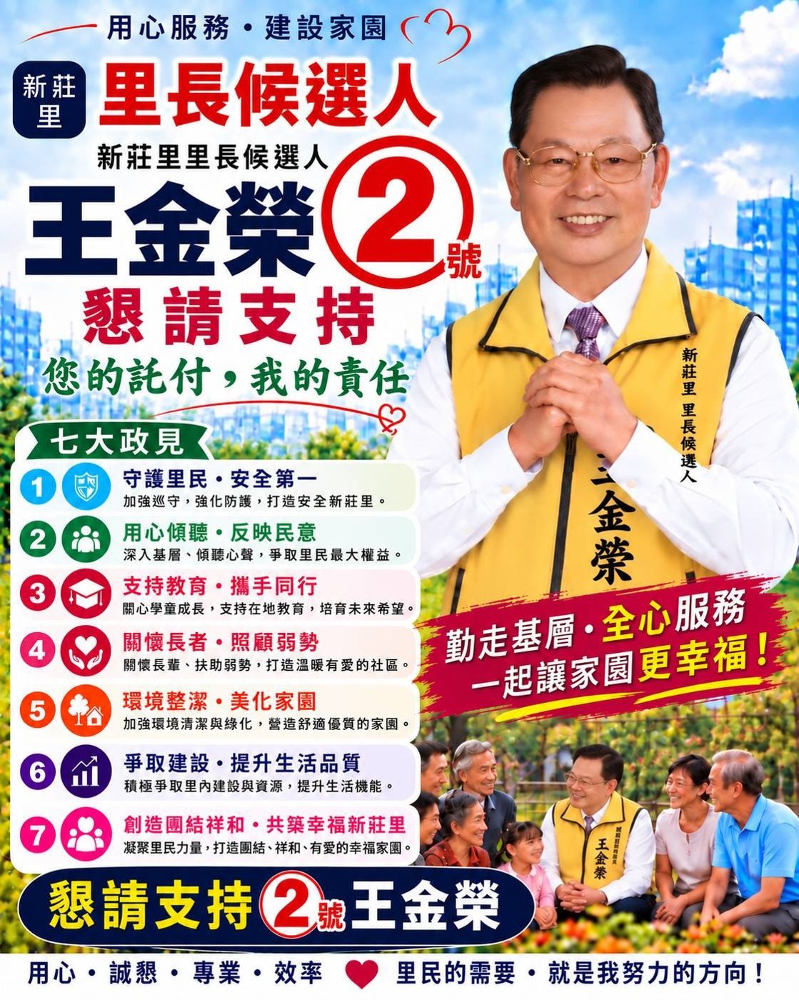
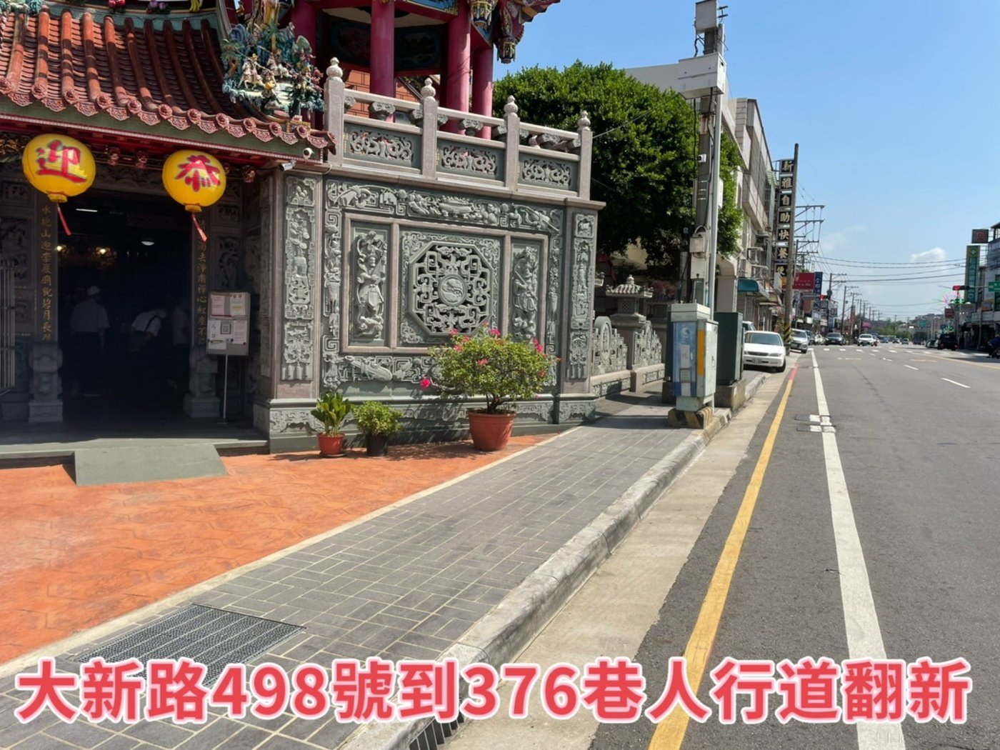
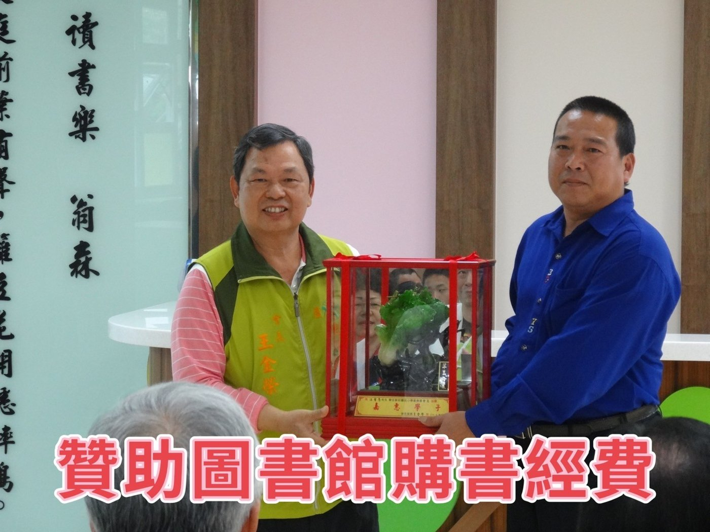
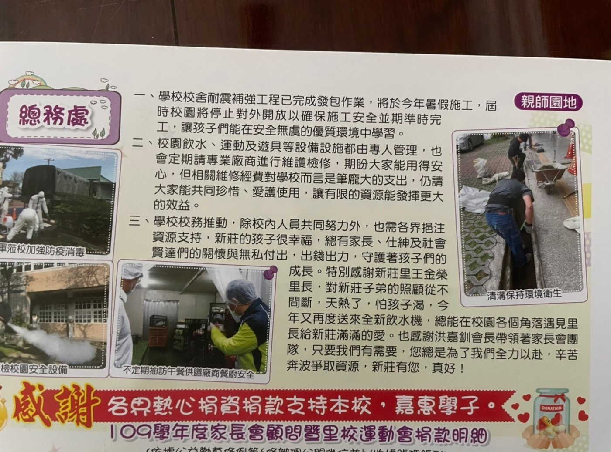
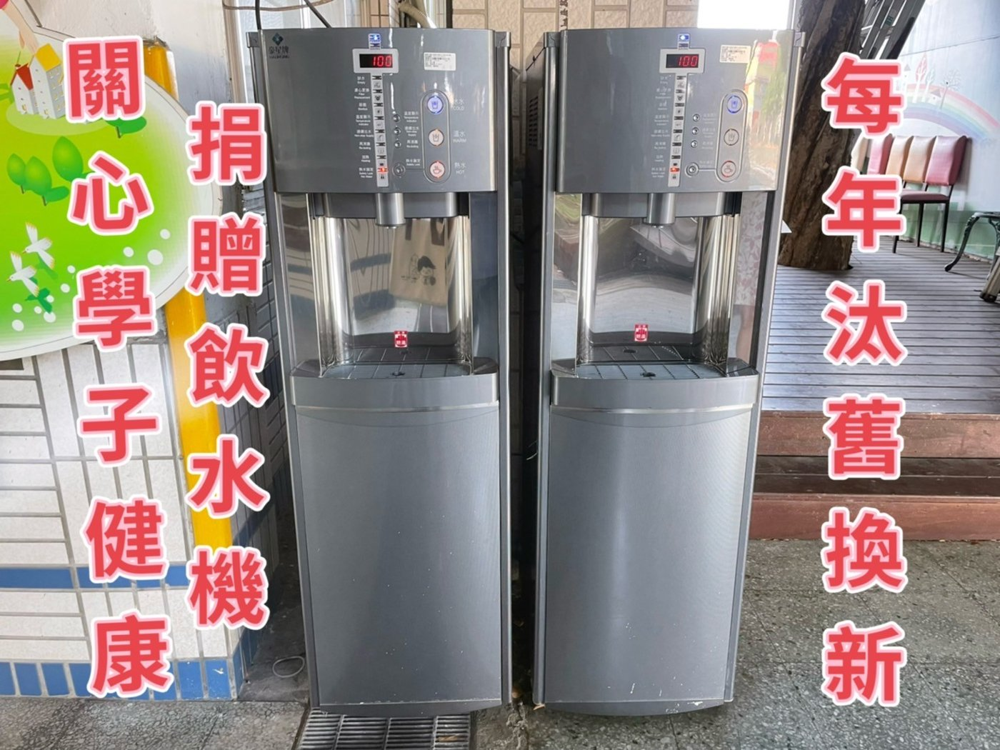
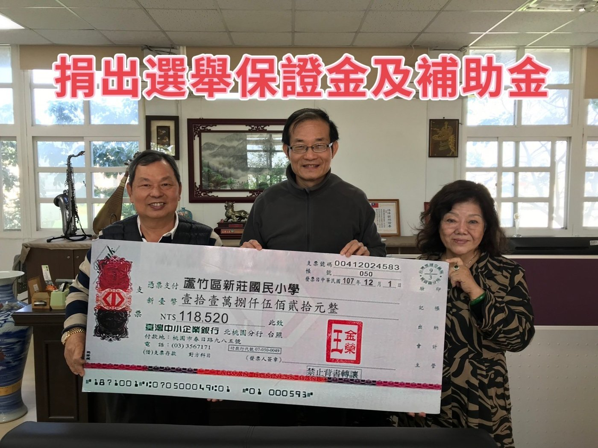
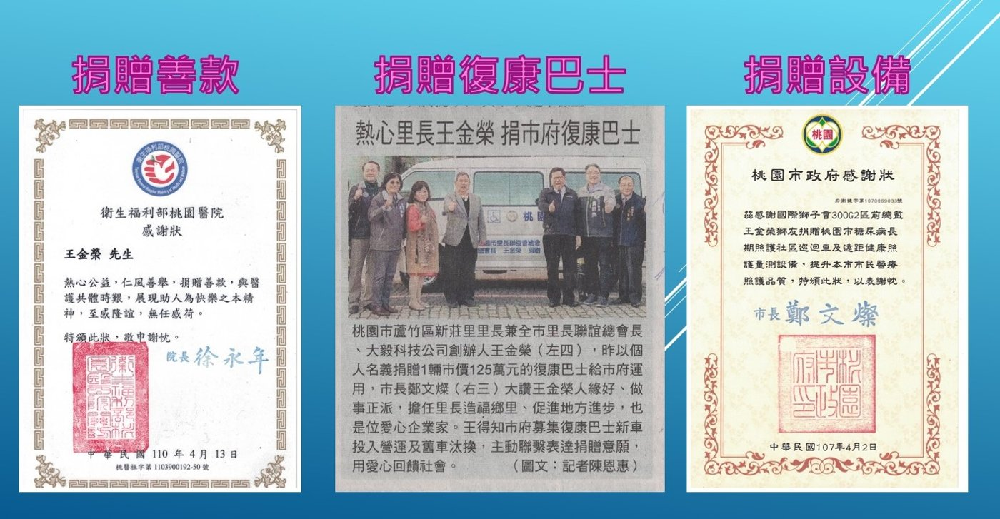

新莊里地方服務資料
↑ 回頂端王金榮
地方服務、建設成果、公益與教育紀錄
本頁依提供之文件與照片整理，將過往成果與未來規劃分開呈現，方便手機閱讀。
過往建設與地方服務
🚦 交通與道路安全
任內資料記載多處增設紅綠燈與 LED 警示燈，並推動道路打通、道路拓寬及重新鋪設。
🌉 橋梁與水利
資料記載長祿橋、土地公坡橋等拓寬，並推動埔心溪相關河道、橋面及堤岸整治。
💧 民生與環境
包含自來水幹線、管徑改善、排水溝與灌溉水溝翻修、定期清淤、環境大掃除及路燈改善等。
🌳 公園與社區設施
資料記載新莊公園增設運動器材、槌球場、籃球場；中油社區活動中心進行空調、照明、門窗、排水等改善。

公益與教育紀錄
📚 支持新莊國小
提供資料記載：贊助多功能活動中心 30 萬元、圖書館 20 萬元，並補助清寒學生學雜費等。

♿ 公益設備
文件記載 109 年 12 月捐贈社會局復康巴士一部，另有醫療與公益設備相關捐贈紀錄。

🚰 校園飲水
提供資料記載持續協助校園飲水設備更新。

服務照片紀錄


未來規劃
🏘️ 社區與環境
推動中油社區環境改善、恢復定期環境清理與年底全里大掃除，並持續改善公共休閒設施。
👧 教育與照顧
爭取設立幼兒園、持續支持新莊國小活動與飲水設備更新，並規劃食物銀行、弱勢家庭關懷。
👴 社區活動
規劃銀髮族健身俱樂部及恢復歌唱班，提供居民運動與交流空間。
🏗️ 基礎建設
持續爭取堤防、水溝、自來水管及相關公共設施改善。
資料來源：使用者提供之「里長任內設1」、「贊助建設」、「捐贈善款挹注回饋鄉里學校」、「新莊里 里長候選人 王金榮 政見」等文件及照片。部分照片含既有文宣文字，頁面僅作資料整理與展示。